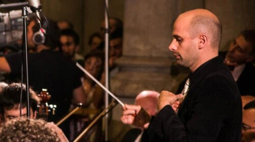
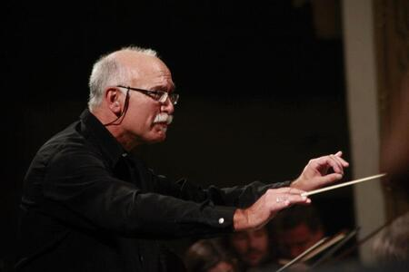
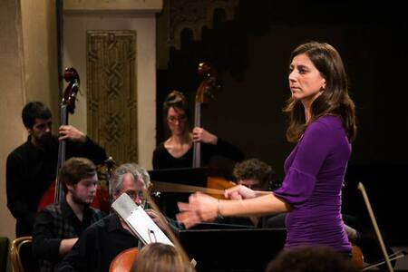
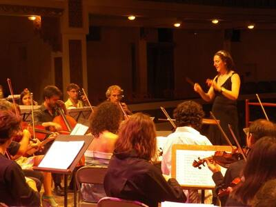
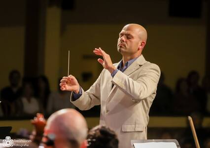
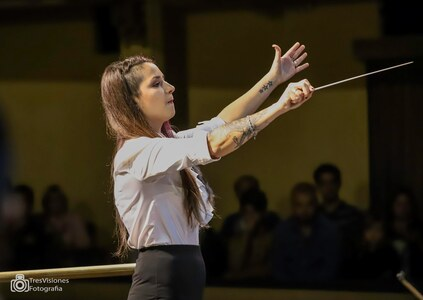
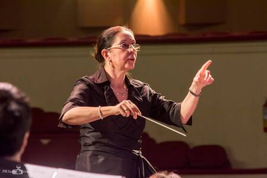

Directores participantes
- Prof. Rafael De Moro (Conservartorio “Luis Gianneo”

- Mtro. Rubén Cepeda (Orquesta Sinfónica Municipal de Mar del Plata, “Mutabilis” ensamble )

- Lic. Fernanda Lastra (Facultad Bellas Artes UNLP, “La Trama Ensamble”)

- Lic. Mariela Barone (Facultad Bellas Artes UNLP, Conservartorio “Luis Gianneo”)

- Mtro. Eduardo Lamas (Orquesta Sinfónica Municipal de Mar del Plata, “Cameratta Brass”)

- Lic. Paula Amorín (Universidad Católica Argentina)

- Prof. Perla Deluchi (Orquesta Sinfónica Municipal de Mar del Plata)
